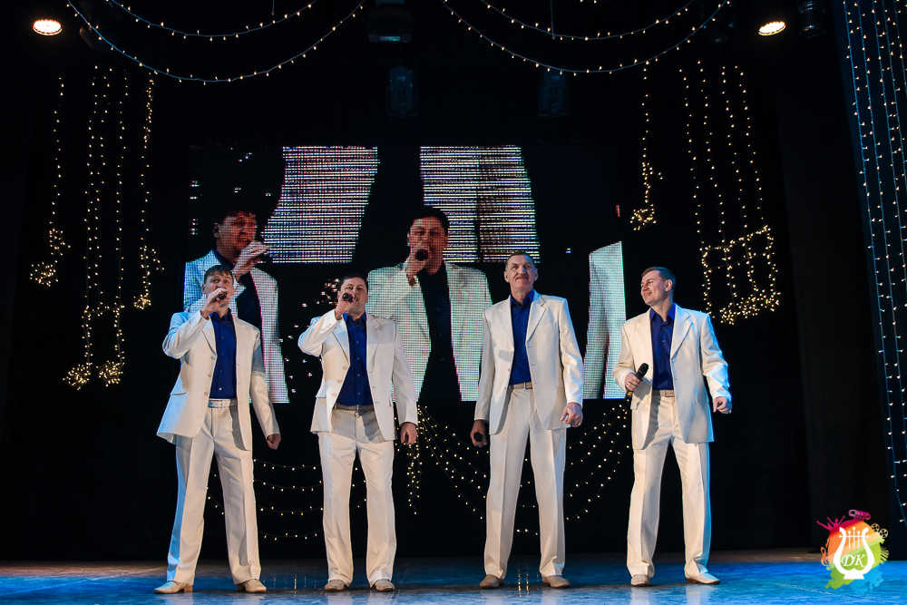
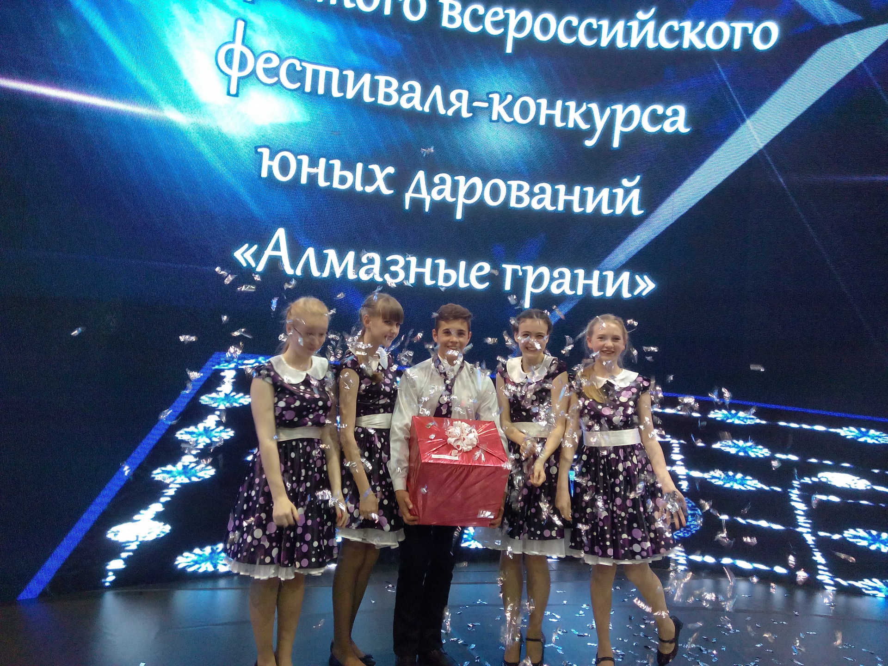
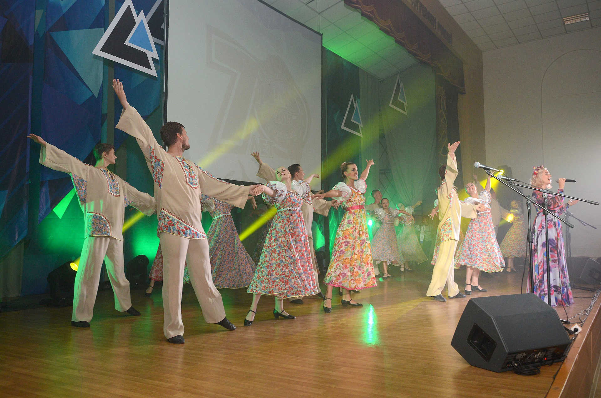
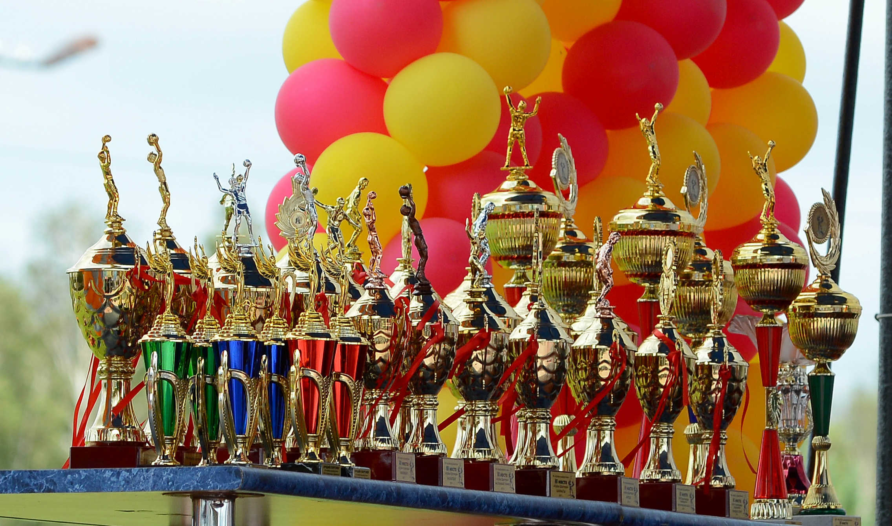
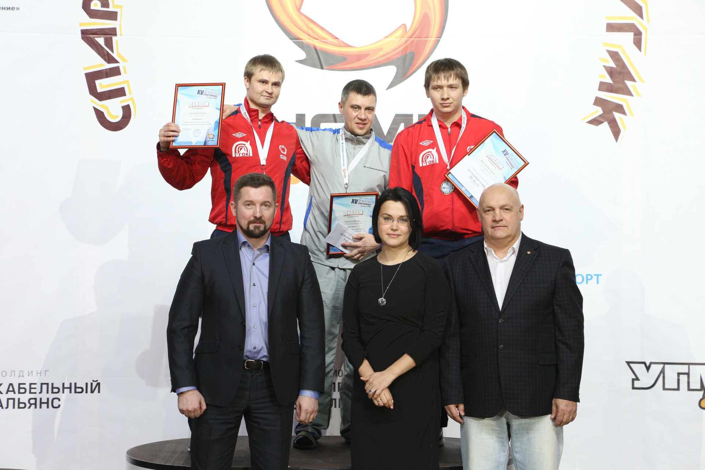
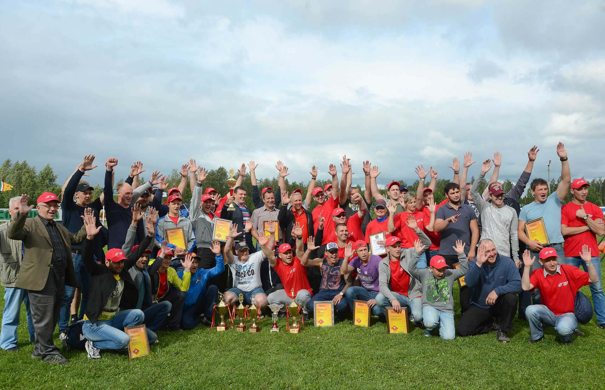

Корпоративная политика УК «Кузбассразрезуголь» предусматривает активное вовлечение работников в культурные события и конкурсы - с целью развития их творческих способностей и формирования корпоративной культуры Компании.
Среди горняков есть немало талантов и полюбившихся зрителям коллективов в вокальном и хореографическом направлении, художники, хранители истории и исследователи древних артефактов. Компания тесно сотрудничает с культурными центрами городов, где расположены ее предприятия, организует участие творческих коллективов Кузбасса в фестивалях и конкурсах УГМК.
 Вокальный коллектив «ИКАР» (Калтанский разрез) - обладатель гран-при конкурса «СТИЛЬ УГМК», 2017г.
 Коллектив «Ассорти» (г.Калтан) - Лауреат международного фестиваля детского творчества «Алмазные грани»-2017, организатор - Благотворительный фонд «Дети России»
 Творческие коллективы Кузбасса – неизменные участники праздничных мероприятий в УК «Кузбассразрезуголь» и УГМК

Визитная карточка УК «Кузбассразрезуголь» - спорт и здоровый образ жизни. Более 1000 работников компании ежегодно становятся участниками корпоративной спартакиады, турниров по отдельным видам спорта, посещают спортивные залы и стадионы, сдают нормативы ГТО.
Большая Спартакиада «Кузбассразрезугля» проводится ежегодно на протяжении почти 20 лет.
Она включает в себя соревнования по 9 видам спорта - волейбол, мини-футбол, баскетбол, настольный теннис, гиревой спорт, шахматы, плавание, лыжные гонки и перетягивание каната, - которые проходят в течение года. Лидеры Спартакиады соревнуются за звание лучшего в финальных состязаниях на «Кубке Шахтера» в августе. Здесь же разыгрывают «Кубок Дружбы» команды руководителей, которые соревнуются в волейболе.
Лучшие спортсмены Компании формируют состав сборной УК «Кузбассразрезуголь» для участия в большой Спартакиаде среди работников УГМК. За последние годы кузбасские горняки становились чемпионами в настольном теннисе, волейболе и баскетболе, призерами – в плавании и в общем зачете соревнований.
В угольной компании сильны не только спортивные традиции, но и приверженность к здоровому образу жизни. В 2016 году впервые в Кузбассе Компания провела Единый день сдачи нормативов ГТО, где каждый желающий работник мог испытать свои силы. Этот спортивный праздник стал традиционным в Компании.
На каждом филиале и сервисных предприятиях работают участники спортивных команд и победители спортивных соревнований. Кедровский разрез известен своими футболистами и лыжниками, Калтанский разрез – шахматистами, Краснобродский филиал – кузница спортивных кадров для сборных команд по футболу и легкоатлетическим соревнованиям. На Талдинском, Бачатском и Моховском разрезах работают сильнейшие спортсмены в игровых видах спорта, их работники составляют основу сборных «Кузбассразрезугля» по волейболу и баскетболу.
 Игорь Черепнев (вверху в центре), двукратный чемпион УГМК по настольному теннису, помощник машиниста экскаватора, Талдинский угольный разрез
 Финал XVIII Спартакиады «Кузбассразрезугля» - более 300 участников и болельщиков со всех предприятий компании, 2017г
Один из главных принципов социальной политики УК «Кузбассразрезуголь» – забота не только о сотрудниках Компании, но и обо всех жителях Кузбасса. Ежегодно на благотворительные цели УК «Кузбассразрезуголь» направляет в среднем 100 и более млн рублей.
Основные направления спонсорской и благотворительной помощи:
Работники предприятий Компании постоянно участвуют в акциях и конкурсах Благотворительного фонда «Дети России» (УГМК), а также собирают средства для операций детям с заболеванием сердца, проводимых с участием фонда «Детское Сердце».
В числе крупных проектов Компании: